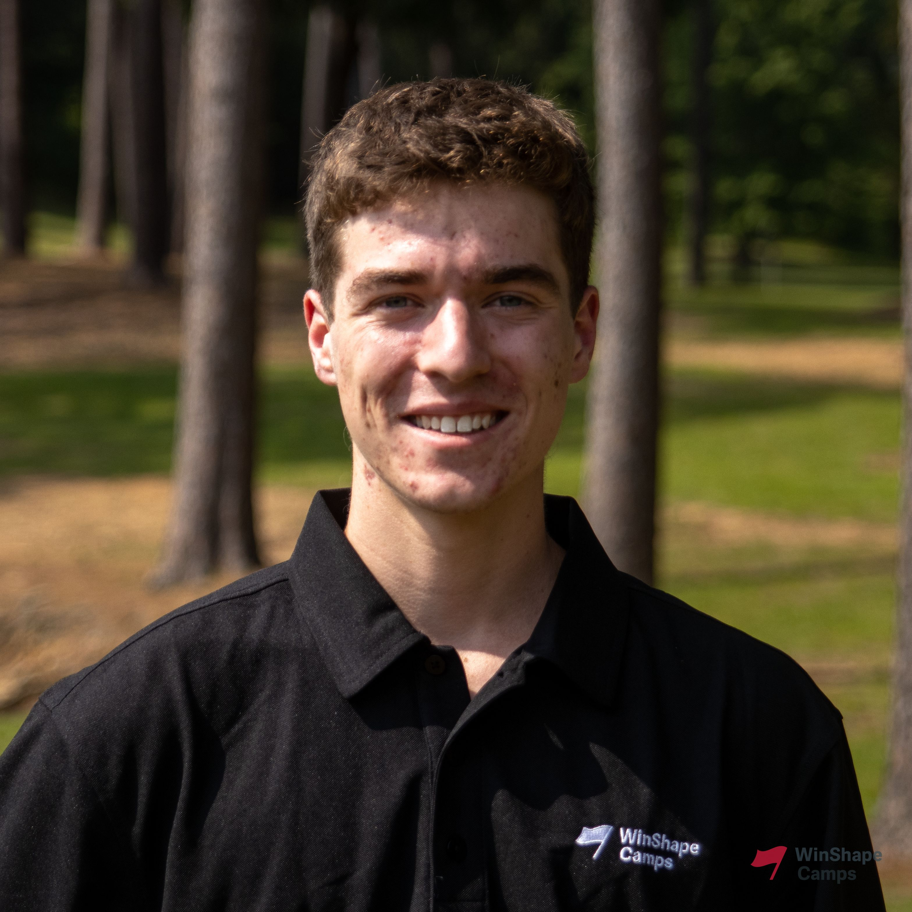
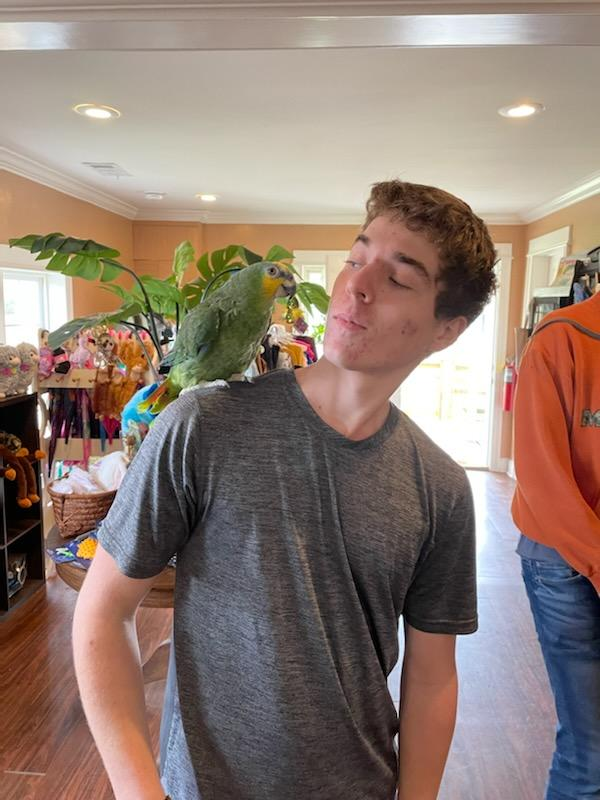
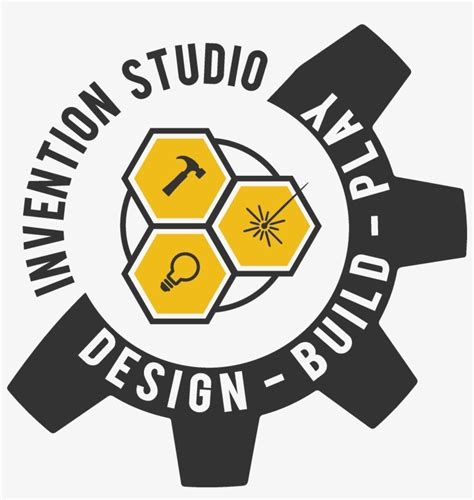

From Farmland to Firmware
This is a page about me background, intreasts, and Education
My Story
Education
Skills
Work Experiences
Extracurricular
 I grew up on a farm in Moreland, Georgia, where I cultivated a strong appreciation for hard work and initiative. From a young age, I developed a passion for creating and problem-solving. My childhood was filled with various projects, such as constructing predator-resistant doors for the chickens, building a barn, and assisting my dad in fixing cars. While my early endeavors were rooted in mechanical engineering, my perspective broadened in middle school when I delved into the realms of computers and robotics. A pivotal moment occurred during a summer camp focused on Lego EV3 robotics, where I became captivated by the idea of constructing and programming devices to autonomously perform tasks. In high school, I took the initiative to teach myself Python, Arduino, and basic electrical wiring. This led to the creation of diverse projects, including an ad blocker for my house, a robotic arm, and even a small prototype vending machine for my school. These experiences fueled my enthusiasm for technology and innovation. Now, as a college student, I am eager to explore new opportunities to enhance my skills and knowledge. I am actively seeking involvement in clubs and organizations that align with my interests, providing a platform for continuous learning and skill development.
 I attend Georgia Institute of Technology and am perusing a degree in Mechanical Engineering with a concentration in Automation and Robotic Systems I also plan on acquiring a masters in Mechanical Engineering focusing on robotics
I attend Georgia Institute of Technology and am perusing a degree in Mechanical Engineering with a concentration in Automation and Robotic Systems I also plan on acquiring a masters in Mechanical Engineering focusing on robotics
I am actively involved in the Robojackets club at Georgia Tech, specifically contributing to the Battle Bots team. Within this dynamic team, I play a crucial role in the design, fabrication, and combat aspects of our own battle bot. My focus lies on the chassis design, where I have gained proficiency in Computer-Aided Design (CAD) and actively participated in crafting various components of the robot's body. In particular, my contributions extend to the conceptualization and design of the primary structure of the armor, including the development of innovative attachment methods. This involvement has not only honed my technical skills but has also provided me with valuable hands-on experience in bringing conceptual designs to life. Being part of the Battle Bots team has been a rewarding journey, allowing me to merge theoretical knowledge with practical application in a competitive and collaborative environment. I am enthusiastic about further refining my skills and contributing to the success of the team in future endeavors.
I proudly serve as a Peer Instructor (PI) at the Flower Invention Studio at Georgia Tech, where my responsibilities encompass ensuring the safety of students and imparting essential skills for utilizing various tools. In this role, I play a crucial part in guiding students through the proper use of tools, fostering a secure and educational environment. My duties extend beyond safety supervision to providing hands-on assistance in project development. I offer guidance to students, helping them optimize their approach to building their projects and offering insights on effective methodologies. Throughout my time as a PI, I have acquired proficiency across a diverse array of tool groups. From woodworking and metalworking to waterjet and laser cutting, as well as skills in sewing, vinyl stickers, and electronics, my skill set spans a wide spectrum. This comprehensive knowledge equips me to support and mentor students with diverse projects and interests, contributing to their growth and success within the Flower Invention Studio.